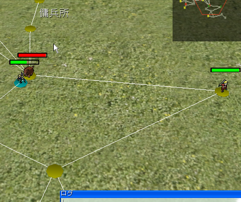
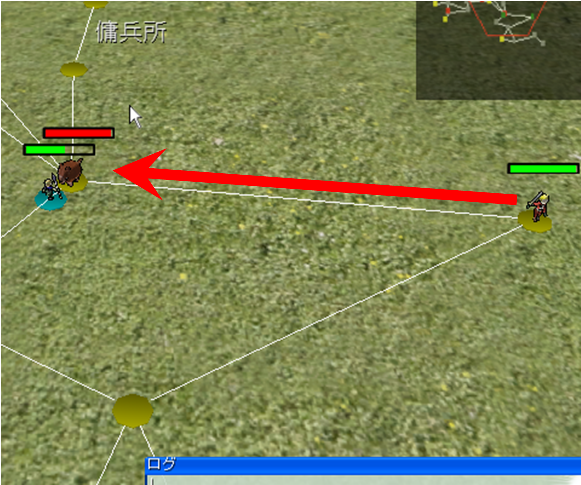
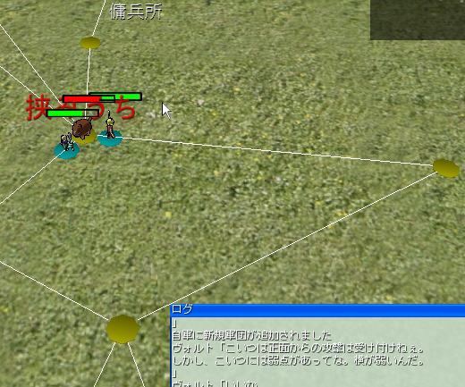
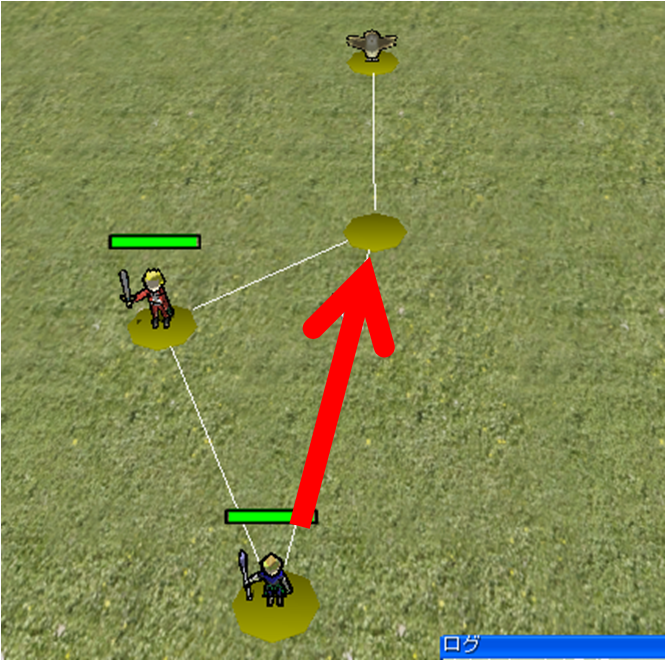
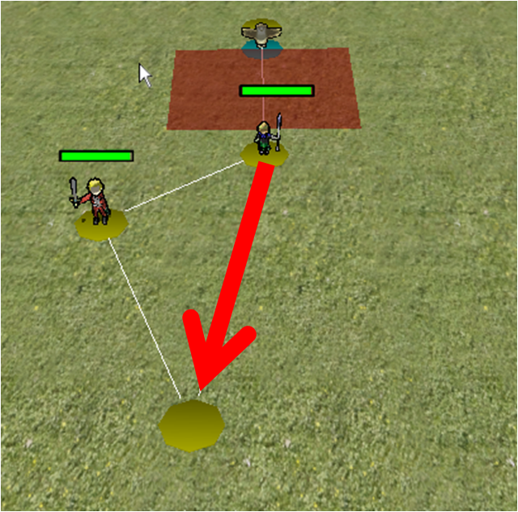
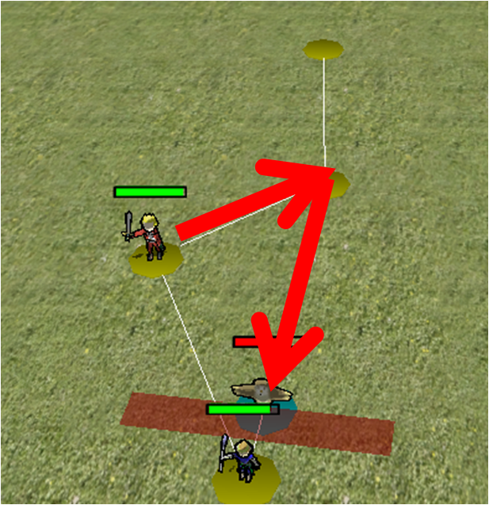
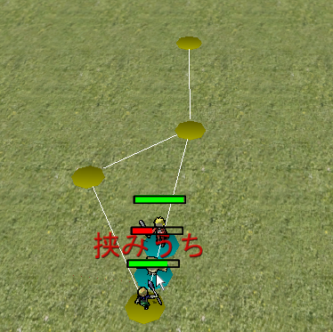
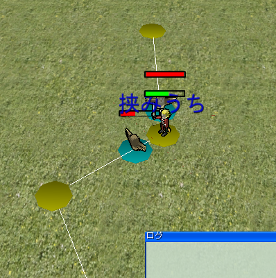

■挟むとは
本ゲームでは、敵キャラクターを、プレイヤー二人以上で「挟む」ことにより、戦闘を有利に戦えられます。
その効果として、敵キャラクターに対して、2倍のダメージを与えられます。
また、一人ではダメージを与えられなかった敵も、「挟む」ことでダメージを与えられるようになります。
この挟むを極めるかで、本ゲームの難易度が変わってくるでしょう。
■基本的な挟みこむやりかた
| 連番 | 画像 | 説明 |
| ① |
 |
初めの状態はこのような状態だとします。 |
| ② |
 |
右側にいる、待機しているプレイヤーを矢印のように移動させます。 |
| ③ |
 |
これで、敵を挟めます。挟みが成功した場合、「挟みうち」と表示されます。 |
■敵の行動を予測して挟む
| 連番 | 画像 | 説明 |
| ① |
 |
開始したばかりはこのような状態だとします。プレイヤーを敵へと近づけさせます。 |
| ② |
 |
敵がこちらへとむかってきます。そこで、プレイヤーを手前へと戻し、敵を手前へとおびき寄せます。 |
| ③ |
 |
待機していたプレイヤーを敵の後ろへと移動させます。 |
| ④ |
 |
敵を挟むことができます。 |
■敵からも挟まれることもあります
| 画像 | 説明 |
|  |
もちろん敵からも挟まれることがあります。その時はこちらがダメージ二倍となってしまいますので、
注意しましょう |